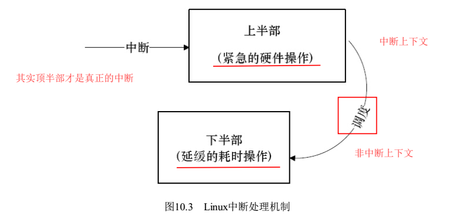
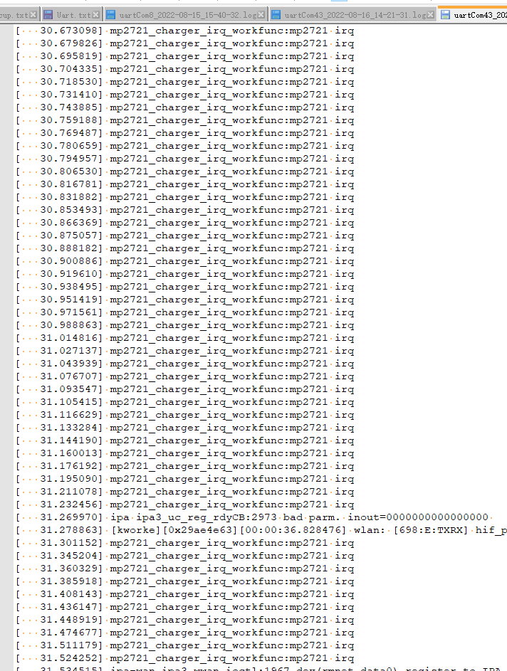

概述
目前charger由于插电脑未限制充电电流，开机过程中插usb会频繁进入中断，而且容易导致死机。
参考
中断原理
中断会打断内核的正常进程调度，所以尽量短小精悍。不过实际系统，中断中要的事又比较多。 为了解决这一矛盾，Linux把中断分为两部分：
顶半部，top half，紧急且量小任务，一般为读取寄存器中的中断状态，并清除中断标记。总之，完成必要的硬件操作。处于中断上下文，可会被打断。
底半部，bottom half，完成主要任务，非中断上下文，可以被打断。 
注:不一定所有的中断都分两部分，如果要干的事很少，完全可以不要底半部。
linux查看中断统计信息的方法：cat /proc/interrupts文件
中断代码
代码是参考
static int mp2721_charger_probe(struct i2c_client *client,
const struct i2c_device_id *id)
{
ret = gpio_request(mp2721_info->irq_pin, "mp2721_info irq pin");
if (ret) {
chr_mp2721_err("%s: %d gpio request failed\n", __func__, mp2721_info->irq_pin);
goto probe_fail_0;
}
gpio_direction_input(mp2721_info->irq_pin);
irqn = gpio_to_irq(mp2721_info->irq_pin);
if (irqn < 0) {
chr_mp2721_err("%s:%d gpio_to_irq failed\n", __func__, irqn);
ret = irqn;
goto err_1;
}
client->irq = irqn;
INIT_WORK(&mp2721_info->irq_work, mp2721_charger_irq_workfunc);
mp2721_info->chg_workqueue = create_singlethread_workqueue("mp2721_thread");
ret = sysfs_create_group(&mp2721_info->psy->dev.kobj, &mp2721_attr_group);
if (ret) {
chr_mp2721_err("failed to register sysfs. err: %d\n", ret);
goto err_sysfs_create;
}
ret = request_irq(client->irq, mp2721_charger_interrupt, IRQF_TRIGGER_FALLING | IRQF_ONESHOT, "mp2721_charger_irq", mp2721_info);
if (ret) {
chr_mp2721_err("%s:Request IRQ %d failed: %d\n", __func__, client->irq, ret);
goto err_irq;
} else {
chr_mp2721_info("%s:irq = %d\n", __func__, client->irq);
}
queue_work(mp2721_info->chg_workqueue, &mp2721_info->irq_work);/*in case of adapter has been in when power off*/
}
分析过程
